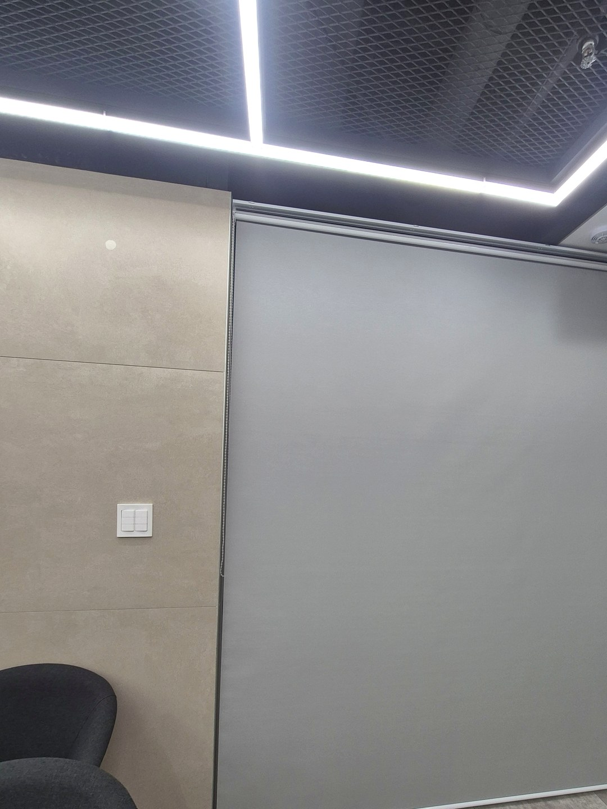
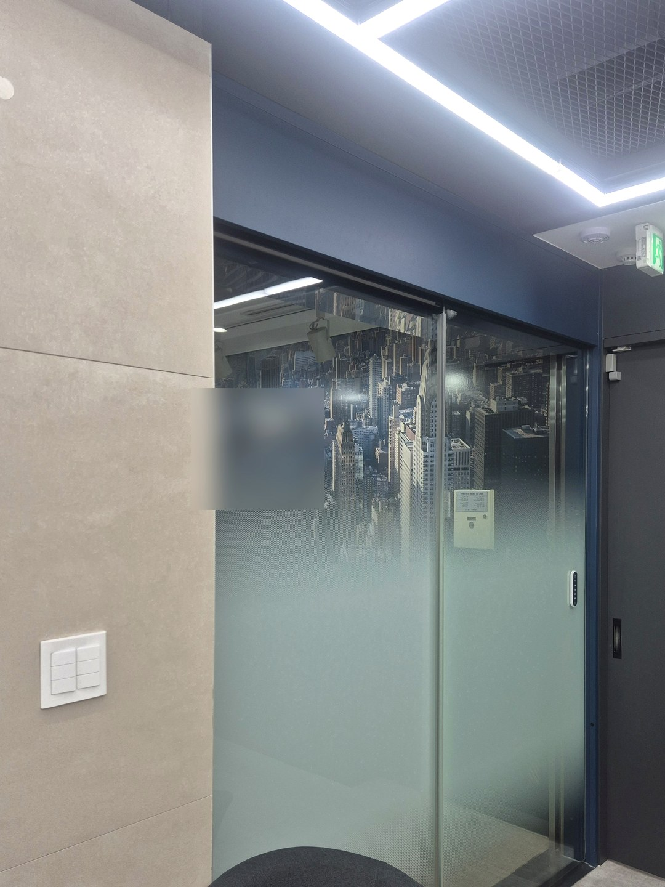
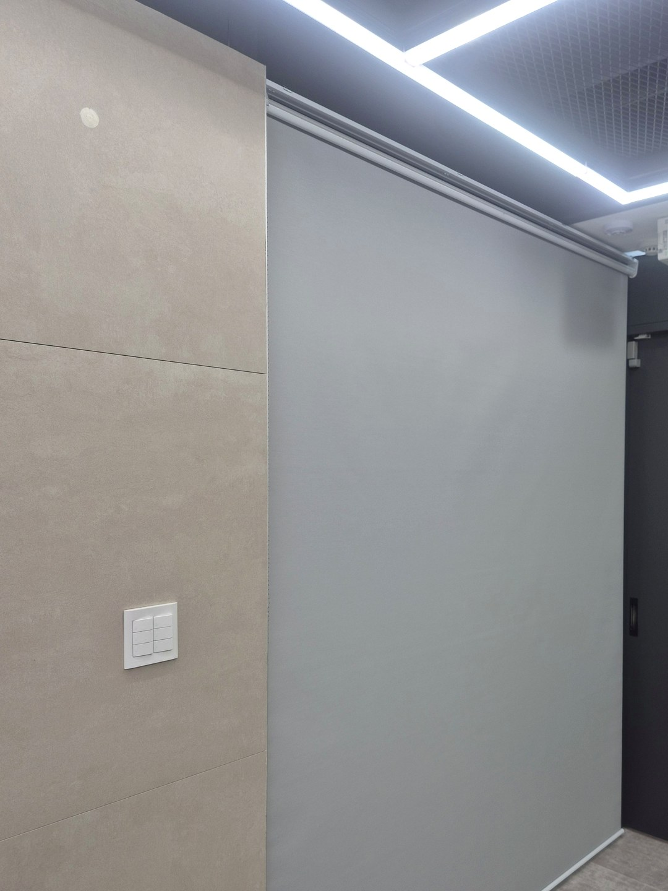
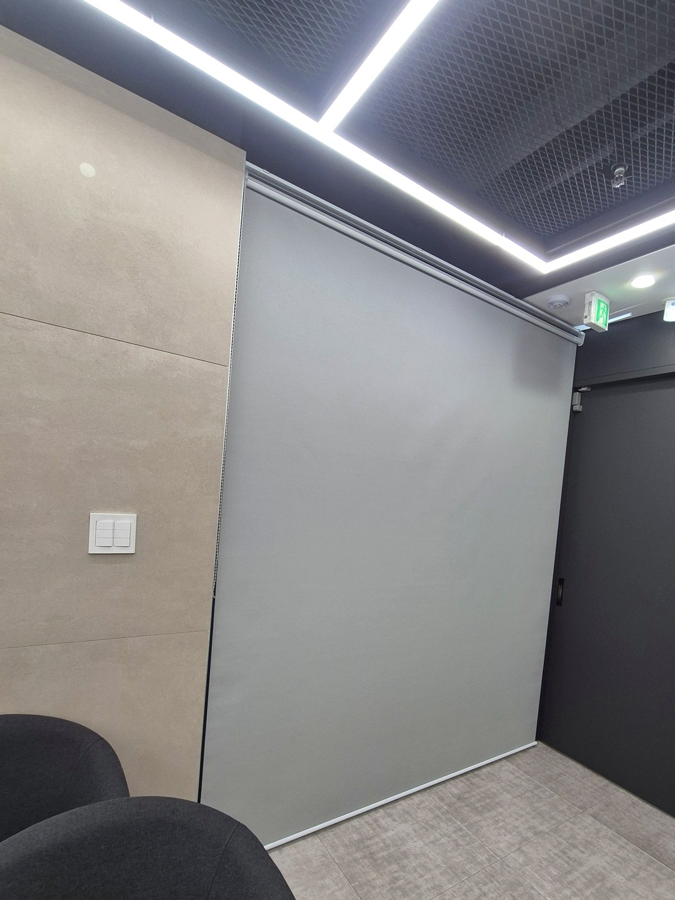
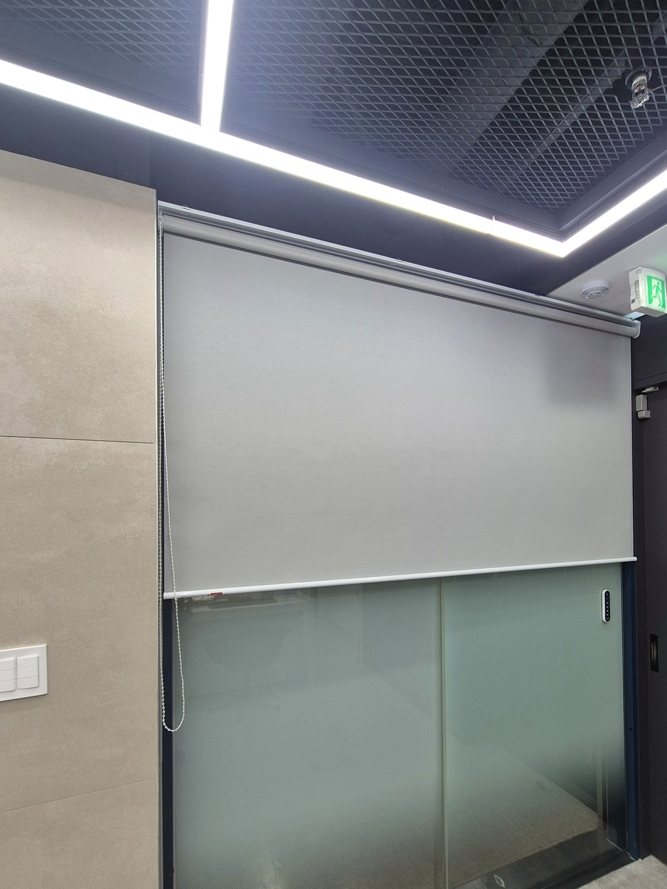
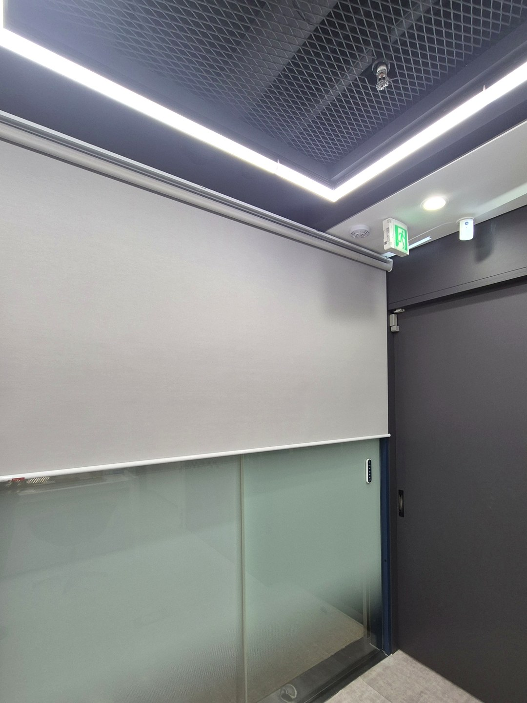

2026년 10월 2일 시공
울산 보험사 사무실
유리문 롤스크린 시공후기

울산의 보험사 사무실에 롤스크린 한 대를 설치했습니다.
다른 업체에서 이 현장의 실측과 시공을 함께 맡겨 주셨습니다.
치수를 재고, 그 치수로 제작한 원단을 직접 달아 마무리했습니다.
시공 전 — 위쪽이 비치던 유리문

이 면은 유리 미닫이문과 옆 유리가 이어져 한 벽을 이루고 있습니다.
아랫부분에는 반투명 필름이 있지만, 윗부분은 필름이 옅어 안쪽 불빛이 밖으로 비쳤습니다.
벽 전체를 한 번에 가렸다가 다시 열 수 있게 하는 것이 이번 일이었습니다.
칸을 나누지 않은 한 대

문과 옆 유리를 따로 나누지 않고, 폭 전체를 원단 한 장으로 덮었습니다.
내리면 이음매 없이 고른 면이 생겨 칸막이벽처럼 보입니다.
색은 밝은 회색으로, 짙은 노출 천장과 베이지 타일 벽 사이에서 튀지 않습니다.

반만 올려 두는 쓰임

원단은 원하는 높이에서 멈춰 둘 수 있습니다.
아래 필름이 가려 주는 높이까지만 올려 두면, 윗부분만 가린 채로 지낼 수 있습니다.
다 올리면 원단이 위로 감겨 문 앞이 비워집니다.

한 대로 덮을 때 따져 볼 것
한 대로 넓게 덮으면 가리는 것도 여는 것도 한 번에 끝납니다.
반대로 문만 열고 옆 유리는 가려 두는 식의 부분 사용은 어렵습니다.
문과 유리가 한 면에 함께 있다면, 어느 쪽을 더 자주 여는지부터 정하시면 선택이 쉬워집니다.
폭이 넓을수록 원단도 무거워져서, 줄을 당길 때 작은 창보다 힘이 더 듭니다.
다른 업체의 현장 의뢰
업체는 멀리 계시고 현장만 이쪽에 있을 때, 실측과 설치만 따로 맡기실 수 있습니다.
이번 울산 현장도 그렇게 진행했습니다.
이런 협업은 인테리어·시공사 제휴 안내에 정리해 두었습니다.
사무실 블라인드 상담
유리면이나 창 전체가 나오게 찍은 사진과 대략적인 폭·높이를 보내 주십시오.
한 대로 덮을지 나눌지, 줄은 어디에 둘지 함께 정해 드립니다.